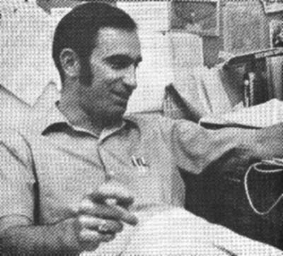
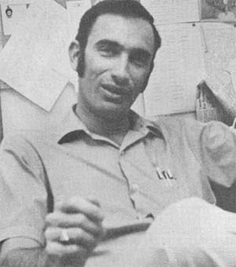
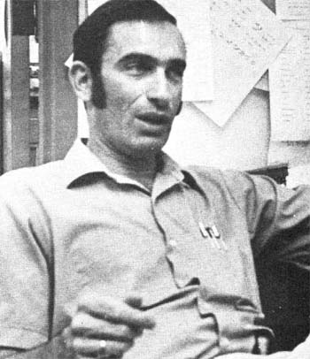

Although Paul Ehrlich had already authored three books (How to Know the Butterflies, 1961; Process of Evolution, 1963; Principles of Modern Biology, 1967) and countless papers, it wasn't until he wrote a slim paperback, The Population Bomb, in 1968 that his name became an almost overnight household word. By the time the soft-cover book rules revised and expanded in February of 1971, it had already gone through 22 printings. No one but its publisher (Ballantine) knows how many hundreds of thousands of copies of the title have now been sold.
Everyone working in the environmental field, however, knows what The Population Bomb has done for Paul Ehrlich. It catapulted him headlong into the very front ranks of the ecology movement's leadership. A position that doesn't particularly impress Paul a great deal: "I suppose," he told a reporter for the British magazine, New Scientist, in 1971, "any scientist who thinks he's any good is egotistical, but my ego is tied up in arcane arguments about numerical taxonomy. I don't have any ego involvement in giving out autographs. At the same time I in not sitting around feeling oppressed about it either, I don't find it difficult to shoot my mouth off.
Well, Ehrlich (and a few of his detractors) can call it shooting his mouth off if he likes (or they like), Most of the people who are vitally concerned about the future of the planet and its inhabitants, though, do nothing but cheer every time Paul speaks. His credentials are impeccable, he does his homework and many of the predictions he made in the late 60's are already becoming too horribly true.
Paul Ehrlich was Director of Graduate Studies for the Stanford Department of Biological Sciences from 1966 to 1969 and he is currently a Professor of Biological Sciences at that university. He is also a consultant to Stanford's Behavioral Research ,Laboratories, Consulting Biology Editor in Population Biology for McGraw-Hill Book Company and a Fellow of the California Academy of Sciences. He holds memberships in the Society for the Study of Evolution, the Society of Systematic Zoology, the American Society of Naturalists, the Lepidopterists Society, the National Pilots Association, the Airplane Owners and Pilots Association and the Royal Aero Club of New South Wales, Australia. Paul is an honorary life member of the American Museum of Natural History.
In 1970, Ehrlich with his wife, Anne-published Population, Resources, Environment and 1971 saw the release of How to be a Survivor, which Paul co-authored with Richard L. Harriman. Human Ecology, a text by Paul, Anne and John P. Holdren, ruts released in 1973 and Ark II, Dennis C. Pirages' and Paul R. Ehrlich's handbook which is subtitled Social Response to Environmental Imperatives, is now available. Paul and Anne are currently working on yet another book, tentatively titled The Ehrlich Guide to a Livable Future. . . and, somehow, Paul still finds time to conduct classes at Stanford, make television appearances, do fieldwork and handle an incredible amount of other tasks.
How does he do it all? With great good humor, drive, ability and a casual shirt-sleeves attitude. When a MOTHER reporter telephoned Ehrlich's Stanford office to arrange the following interview, he was surprised to find that Paul-one of the most sought after names in the environmental movement-answered the phone himself. The give-and-take session which followed some days later was conducted with the same refreshing air.
Paul Ehrlich is a long, lean, physically fit dynamo who has peered into the future and found himself unhappy with what he has seen. The following interview, in which he shares some of his forecasts and suggests what we can all do to make the earth a more livable planet, was held in Ehrlich's Stanford office in June of 1974 . . . just a few days after Paul's 42nd birthday.
PLOWBOY: Paul, it seems somewhat unfair that so much of the general public-and even some environmentalists who should know better-think of you only as some kind of "antipopulation" spokesman. I'm sure this is because of the almost overwhelming popularity of your book, The Population Bomb, and because of your close affiliation with and support of Zero Population Growth, Inc.
But that's only a small part of your work! You've had several other books and innumerable papers published in both the fields of biology and ecology. Even The Population Bomb, for that matter, covered far more than the question of too many people: It delved into the failure of modern agribusiness, discussed industrial and other pollution, explored the possibilities of thermonuclear disaster and sketched out several other ways in which mankind can destroy and is destroying the planet.
EHRLICH: That's quite true. My basic view-and the view of John Holdren and, I think, Dave Brower and Ken Watt and all other knowledgeable environmentalists-is that population isn't the entire problem. John Holdren and I have worked out formulas for dealing with the deteriorating situation we now face in the United States, and we feel that, roughly, 40 to 50% of the blame can be assigned to population growth. The rest, more or less, is due to increased per capita demand and faulty technology. These are the three main causes of the trouble we're in and you can't ignore any one of the three. I've never said that population is the only problem.
PLOWBOY: Yet there's no question that you did hit the population problem as hard or harder than anyone else back around 1968 to, say, 1971.
EHRLICH: Let me put it this way: I used to believe that changing people's minds about the number of children they should have would be the toughest part of the whole environmental battle. I mean, it looked as if we were up against religion and tradition and the very glue that holds society together, and I didn't think there was a chance in hell that we could lower this country's birthrate in any meaningful fashion for years and years and years.
As it turned out, however, most people were quick to notice once it was brought to their attention-that the resource pie is finite and the more individuals you have reaching for a slice, the smaller each slice is gonna be. I think, also, that we hadn't counted on how much women really weren't ape to have large families. Once we had demonstrated that the world doesn't actually need more people-and once women's liberation came along-the pressure was off. All of a sudden a lot of women said, "The hell with staying home and scraping dirty diapers . . . I'm going to have a career."
PLOWBOY: A few breakthroughs in birth control helped too.
EHRLICH: Yep. The pill helped, although a fair amount of data would indicate that it mainly made family planning easier for people who were already trying to limit their fertility by some more traditional method.
PLOWBOY: Whatever. The important point is that the U.S. birthrate is down . . . and down dramatically. I think your work with ZPG had a lot to do with that.
EHRLICH: Well I think that ZPG and the rest of the population control movement played a role, I think the economic crunch has been a factor and I think that other forces have helped hold down this country's birthrate. I'm not going to take too much of the credit . . . but I am happy to see the downward trend in births. As a matter of fact, if there's anything that makes me optimistic, it's this trend. Six or seven years ago I would have said we were doomed to have a higher birthrate in 1974 than we had in 1968 . . . because there would be more women in their childbearing years and so on. But it hasn't worked out that way. People can make meaningful changes in the way they live and in the impact they have on the planet . .'. and they can do it in a relatively short time if they really want to.
PLOWBOY: All right. Changes can be made. The birthrate is down. But is it down enough?
EHRLICH: Right now the net reproductive rate-and it changes from month to month-is around one. This means that each generation is basically replacing itself and that the average family is going to have a little over two children. At a rate of one, however, it should be noted that-since more women are currently entering their childbearing years than ever before etc - the population of the United States will still continue to grow for about 60 years. During this period we'll add another 50 million people to the 2I0 or so million we already have . . . and that's too many. I would guess that an additional 50 million individuals would very nearly double our environmental problems. When you begin to overcrowd your environment as we have now done, adding 25% to the population does a lot more than add 25% to your troubles.
Every new arrival makes the system just that much bigger and more complex, which means that it takes more and more raw materials, per capita, to wire each addition in as well as all the individuals are wired in who got there earlier. In short, everybody demands more. And you've got to go further to get it. And you have to settle for materials of a lower grade. And it costs more to get each extra pound of metal and food out of the ground. Any farm boy knows what the curve of fertilizer input versus yield looks like. It tapers off very rapidly. You get a dramatic increase in your harvest for the first few pounds of plant food you put on . . . but you get a much smaller return for every additional pound of fertilizer. It's the law of diminishing returns. In this case, we're talking about quality of life.
PLOWBOY: So, on the one hand, you're happy that the U.S. birthrate is down . . . and, on the other, you wish it would drop still further.
EHRLICH: I would like to see the net reproductive rate move down to an average of about a child and a half per family so that our population growth would level off somewhere around an additional 30 million people. We could then afford a 200-year slow decline that would take the United States back down toward a population of something less than I00 million.
PLOWBOY: Why a slow decline? Why spread the decrease out over 200 years?
EHRLICH: Well this is just an estimate on my part and the demographers might have a slightly different view of the matter. But if you start comparing more and more rapid rates of decline, at some point you'll find that the shrinking population begins to cause more disruptions than ecological benefits. Follow a population bulge with a drastic squeeze and Social Security gets shot down, school officials and baby food manufacturers are left way out on a limb and so on. Things tend to get screwed up and the social costs can override the environmental gains. Still, I think we can easily afford a fairly rapid decline in our net reproductive rate. It's either that or watch the death rate increase. There's no question at all in my mind about whether or not population growth is going to come to an end. The only question is how. We're up against the limits. Either we hold births down . . . or watch deaths go up. And if Reid Bryson at the University of Wisconsin and some other climatologists are right, we're going to see the death rate multiply even faster than anyone suspected a few years ago.
PLOWBOY: Yes, I know. Bryson thinks that the current drought in the sub-Sahara and other "isolated" weather changes here and abroad are all part of a massive shift in the earth's climate . . . a shift for the worse.
EHRLICH: See, what has happened-and this really disturbs me-is that, by international convention, we've defined "normal" weather as that which occurred during the period 1930 to 1960. While, according to historical records, that was the most extreme period in the last I,000 years.
PLOWBOY: Extremely good.
EHRLICH: Right. And Bryson and some others in his field have some pretty strong evidence that the earth's climate won't be that good again for I00 decades.
PLOWBOY: Which is a long time.
EHRLICH: Yeah. Especially since we've been doing our damndest to "improve" the world's crops so that all their response curves peak for 1930-1960 weather. We've been selectively breeding out thousands of strains of wheat and rice and everything else and leaving only those that produce best in conditions we won't see again for I0 centuries. Now, of course, you can always select out new strains for the somewhat worse climate we have immediately ahead of us . . . if you have time and if you have the genetic pool to draw on. But the decay in genetic variability of our crops is probably the most serious problem we face right now, and it's the one we're doing the least about.
PLOWBOY: I know, and we're already on the ragged leading edge of a massive calamity. Did you know-three or four years ago when we had the corn blight in the Midwest-that some of the bigger farmers and suppliers illegally bootlegged seed corn into this country from Central and South America? It looked as if the few strains of hybrid corn we had standardized on in the U.S. were all going to be wiped out by the blight, so growers were desperate to get their hands on seeds from another genetic pool. That sounds like something out of science fiction, but it actually happened.
EHRLICH: Exactly, You see this is going on all over the world with the so-called Green Revolution. Native strains are being replaced everywhere. There's one place in Turkey where they had 35 indigenous varieties of wheat growing 20 years ago and now they have one.
This is a very dangerous trend, you know, because you've got to remember that today's high yields in agriculture are due not to pesticides and not to other chemicals . . . but to plant genetics. Despite the claims made by the big agribiz companies, we really don't do any better job of protecting our crops now than we did in 1935. The bugs get resistant to pesticides very quickly. The pests that want to eat our crops are always evolving-always trying to find ways through the defenses we set up-and -the plants we raise, in turn, are always evolving ways to slap down the pests.
We're studying this right now in Colorado and we're finding that plants actually maintain a biochemical variability. They can vary their mixes of alkaloidal poisons, and this slows down the rate at which insects can become resistant to the poisons the plants are making.
See, there's just no such thing as a perfect strain of plant that is going to grow forever in a stationary climate and be attacked by only one stupid pest which never gets any better at its job. The bugs are always evolving and the weather is always changing. The variety of soybean or rye that has a slight edge over all other strains right now can easily be inferior to another variety a hundred years from now. In the case of an unexpected attack by something like the corn blight which swept the Midwest a few years ago, today's "best" strain might even be wiped out completely. This coevolutionary race is a very close and a very chancy one and we need all the variability on our side that we can get.
Trying to explain this to the agencies that control the money which gets spent to support chemical agribiz, however, is like trying to explain alternate-day gasoline rationing to a cranberry. I mean you're talking to a blank wall. It's absolutely incredible.
So here we are doing just the opposite of what we should. We're concentrating on refining our food crops down to just a few mono cultures. We're losing the genetic variability of our food supply at the very time. our plants' enemies are developing increasing resistance to pesticides and we're entering an age of rapidly changing climate. On top of that, we're spread as thin as mankind has ever been spread in the agricultural field . . . we simply can't afford a major-or even a minor-crop failure. Man, that is dangerous.
PLOWBOY: I know.
EHRLICH: What it boils down to is that, due to weather alone, the whole fate of the world almost hinges on the Indian monsoon this year. If they don't get the rain they need, the fall harvest will be off and we're all going to be in trouble. Everyone is going to be trying to eat the wheat and corn and soybeans grown in our Midwest . . . and there's probably not going to be enough to go around. The wheat looks pretty good so far, but my interpretation of the daily weather reports is that the corn must be in deep trouble. Have you been in the Midwest lately?
PLOWBOY: Only Indiana and the corn is going in very late up there. I hear it's the same across Illinois, Iowa and several other states. It's hard to tell, though. Agricultural Secretary Butz and the USDA keep giving out rosy projections all the time that only seem to confuse the issue. As near as I can figure, however, the corn crop is going to be down quite a bit from the record yield that was predicted in the spring. Some farmers have replanted two and three times and still don't have a stand.
EHRLICH: I'm going to start subscribing to one of the farm magazines so I can keep closer to the situation. I find it almost impossible to stay current on what's happening in agriculture.
PLOWBOY: One thing that's happening right now is that beef prices are holding pretty high in the supermarkets at the same time cattlemen are losing an average of two hundred bucks a head on all the feeder stock they're selling. The guys raising beef are going broke, the consumers are paying through the nose and the middlemen are making all the money. Apparently the same thing is starting to happen in poultry and a few other areas. So, just like in the 20's, farmers are again finding it more profitable to kill baby calves and chickens than to try to raise them for market.
It's the classic situation: When the ground rules get bent so far out of shape that the speculators have a better chance of making money than the people doing the real work, watch out! The system is falling apart.
EHRLICH: Well, if what you say is true, we're going to be enormously short of beef a year from now. And I know we're going to be short of grain. We've painted ourselves into a corner, you see. We need every single grain of wheat we can get every year. There's no buffer Of course this isn't the first time mankind has been so stupid. Consider the form of agriculture traditionally practiced in the tropical rain forest. The people go into an area, chop down a small clearing at the end of the dry season, let the foliage dry and burn it. They get a rich ash and they also kill off the weed seeds and the insect pests in the hot fire. Then they plant their crops, the rains come, everything starts growing and the tribes people get out their machetes and chop weeds as fast as they can and squash bugs and get a crop.
Well, the next dry season they cut down the remains of their first planting and they burn it . . . but the fire isn't as hot this time and there's not as much ash. The soil isn't as fertile and there's more weeds and insects the second year, so the tribe moves on and starts over somewhere else.
OK. Maybe 400 years later someone comes back to the first area and starts over again. And that cycle keeps being repeated and the population grows and the people return more and more frequently. When they get to coming back before the process of regeneration is complete, the original hole in the forest isn't as fertile as it once was-and, besides, the tribe is larger anyway-so the hole has to be made bigger. And that exposes more ground to the sun and the torrential rains. And remember that rains in the tropics are torrential.
Another thing to bear in mind is that the nutrients in a tropical rain forest are in the trees and vegetation . . . not in the soil. The. soil is actually very thin. And you've got this fine layer of roots along the surface that recycles the nutrients right back up into a leaf crop above the ground. So the soil stays thin.
All right. Once you open a clearing so wide that the roots can no longer reach across-and you expose this fragile soil to the harsh tropical sun and the beating torrential rains-you get a complex chemical change which, at best, can make the earth infertile and, at worst, changes the soil to a rocklike substance known as laterite. And once you've got laterization of rain forest soil on your hands, the whole life-support system starts going down the tubes.
You know those magnificent temples built by the Khmer civilizations at Angkor Wat in Cambodia 800 years ago? They were constructed of sandstone and laterite. The same grand edifices put up by those people now stand as tombstones over what was once a lush cropland.
This didn't just happen in Southeast Asia, either. It has taken place-and continues to go on-throughout the tropics. Remember the Mayas in Central America? And look at what the Brazilians are doing right now . . . they're well on their way to turning the Amazon Basin into the world's biggest parking lot. Even the Brazilian ecologists have warned the authorities down there. It isn't as if this is any big damn mystery, you know.
PLOWBOY: What about the Sahara? I've heard that it was once a lush forest.
EHRLICH: Oh yeah. The world is littered with the remains of civilizations that didn't make it ecologically, starting in the TigrisEuphrates Basin. Have you seen the Mediterranean region? That used to be a forested area too, you know. That used to be good land.
If you want to know the truth, I'd say that the biggest mistake mankind ever made was the agricultural revolution. We were a great hunting and gathering animal. If you look-and I have, I've lived with Eskimos and seen bushmen and aborigines and so on-you may be struck, as I have, by the fact that each individual in that kind of society was-at least before they had contact with us-almost a carrier of a full culture. Every individual knew exactly where he or she fit into the picture, had more personal worth and was less alienated than any member of our modern civilization. There are a lot of aspects of our civilization I like, you understand, but I refuse to accept-at least automatically-that what we have today has been worth destroying wide areas of the world for.
PLOWBOY: And we are destroying the world . . . in an ever increasing number-of ways: with strip mining, clear cutting, industrial pollution, chemical warfare, nuclear waste and hundreds of other "weapons" that our ancestors never dreamed of. Since we've been talking about agriculture, however, let's stick to that subject just a little longer. Look at what agribiz is doing to this country. Look at what it's doing to this state-California-alone! How long are we going to continue silting and salting out the valleys of California so that Chicago and New York can eat through the winter?
EHRLICH: Well what can you do but raise more and more salt resistant crops? There is a limit to that game, of course, but we never seem to learn. We're not only wearing out the soil, we're covering it with houses. According to Ken Watt, half the good farmland in California will be covered with subdivisions and concrete by 2020 if we continue building developments at the current rate. But what the hell . . . the "experts" tell us that we'll just use some scientific magic to either grow twice as much on what's left or to make artificial foods of some kind.
PLOWBOY: We'll do it all with fertilizers and pesticides and irrigation and food preservatives!
EHRLICH: Yeah. That's what the experts tell us. What they don't tell us is that all these "answers" create just a few problems of their own. When people brag about science, you know, they talk about antibiotics and automobiles and so on and you don't hear much about the millions of people who are dying of smog and the fact that today there are more hungry people in the world than there ever have been. There's more sickness, more misery. Science has given us a lot of miracles, but it also gave us noise pollution, brainwashing, nuclear war and biological weapons.
Take pesticides, for instance. One of the main things they've done is promote to pest status insects that were never pests before. Mites, you know, red mites were never a problem until we used DDT to kill the insects that used to eat the mites. Now, of course, DDT has generated a whole new pest for the industry to tackle. These damn pesticides just create a demand for themselves. You've got to use more and more and more of them until you go broke.
PLOWBOY: Well the argument is that we now need them.
EHRLICH: Oh crap. That's the argument and it's pure crap. They've just pulled out that "need" crying towel so they could start using DDT again in the Northwest. They claim they have to have it to fight the tussock moth. Well I've got news for them. The tussock moth has been around for a very long time now . . . since way before there were such things as pesticides. Ever so often the moths come through and eat a lot of the weed trees right down to the ground and then the forest regenerates itself without the benefit of DDT. It's a very natural cycle.
PLOWBOY: Gee, you don't seem to have much sympathy for the pesticide industry. What about the folks who put preservatives and additives in all the processed foods we're served these days?
EHRLICH: Well remember this: Organisms generally have the same general kinds of metabolism. And why do they put additives in the food? To keep other kinds of organisms-from bacteria to insects to mice-from being able to digest them. And guess what? Funny thing. Ho, ho, ho. If they can't digest that food, then you probably can't digest it the way you're supposed to either. Of course a lot of the stuff that's added is purely cosmetic. It just makes whatever it's put into look better so you'll pay more for it. I'm not really an expert on food processing but I know that a great deal of the flavoring and emulsifiers and coloring and plasticizers and whatever that's added to processed foods doesn't do your body the least bit of good.
Anne does keep up with nutrition and we pay a lot of attention to what we eat. Even so, we wind up with a certain amount of plastic that we just can't avoid. The fact is that an American who eats the diet shoved at him by the advertising media and the drive ins along the road is going to be malnourished. He can't miss. He simply has to take in too many carbohydrates to get the protein he needs.
PLOWBOY: What really kills me about the whole thing is that most of the population doesn't seem to know any better. We've developed what I call a "carp culture". We're increasingly a society of trash-rather than game-fish. I think we're into about the third generation of people who don't know what real food tastes like. Kids now judge the latest wonder mixture of embalmed and artificially flavored filler against the half real/half-fake stuff their parents subsisted on, which wasn't as good as the frozen and canned stuff their grandparents ate and which, in turn, wasn't as nourishing or as tasty as the garden produce, foraged wild foods and fresh-killed meat that made their great-grandparents strong enough to hack a nation-good or bad-out of the wilderness.
EHRLICH: Yeah. Many people don't know enough to care anymore. When I point out the smog down in Los Angeles, they say, "I like to see the air I breathe," or "It's the smell of progress". I'm 4I now and I remember 1947, when I was I5 years old and took a trip around the West. A lot of roads weren't paved then and the air was clean everywhere. The big rape was just starting. I guess my generation is the last to know how it used to be . . . which makes me so afraid of what's coming.
PLOWBOY: And what do you see coming? What's the best we can expect?
EHRLICH: Taking the world view, the best we can hope for will be that humanity will finally come to its senses and organize to ameliorate the time of crisis we're coming to. This means that, although a lot of people will die young, the whole system won't quite break down because even the people who are in trouble will realize that other people are trying to help them and it will all become a cooperative operation. Now that is utopian to say the least and I don't expect to see things go that well. save a lot of energy and, in my opinion, have a great deal more fun. At any rate, that's the best practical case I can see-the planet's population will fall drastically sometime in the next decade or two for very unfortunate reasons, but the whole world will not be totally destroyed in the process-and it means that an awful lot of poor people are simply going to be written off.
PLOWBOY: And what's the worst future you envision for mankind?
EHRLICH: The worst case is a calamity the likes of which nobody has ever imagined. I guess it would be something like this: When the inevitable process of writing off the poor people of the world begins, the despair that is sure to follow on their part and the competition between the overdeveloped countries for the scraps left from the underdeveloped nations will lead to an all-out thermonuclear war accompanied by fire storms, flows of chemicals into the sea, silting, long-life radiation and worldwide plagues.
PLOWBOY: Man-created plagues, I suppose.
EHRLICH: Oh sure. We've created all kinds of nasties in the laboratory and become very, very vulnerable to them because of the way we run our medical systems. The potential for catastrophe is very nearly infinite in this one area alone.
PLOWBOY: That's a pretty rough view of the future. How does it make you feel?
EHRLICH: I think it's quite sad that our species--which has so much hubris-is basically thrown back on nothing but luck. Our future is all a flip of the coin . . . a cut of the cards. Is the weather going to hold for another year or two, or isn't it? The most discouraging aspect about the whole thing is that if there are a couple of good years in India, we'll eventually just see an additional 26 or 32 million people starve to death when the inevitable run of bad weather sets in. Good luck, in other words, is nothing but worse than bad luck in disguise unless we use the gift of time to make a concerted effort to limit population, cut down on demand and replace faulty technology.
It's the classic situation we've repeated down through history, you know. A country has a million people living on the edge of starvation so it puts in an irrigation project and grows twice as much food . . . and ends up with two and a half million people living on the edge of starvation. The Irish potato famine showed the way.
PLOWBOY: Well, why don't we-collectively--ever learn? If you can understand these things and I can understand these things and if the individuals who read this interview can understand these things . . . why do we collectively keep making the same mistakes over and over again? In particular, why do our leaders keep repeating the same mistakes time after time after time?
EHRLICH: First, you must realize that most of the world's leaders are politicians who look forward only to the coming election. They know they'll be dead when the next generation-the one that's going to be grateful-comes to the polls and has something to say. So when it boils down to a choice of doing the right thing for the planet and future generations or doing something that will buy enough votes to get past the next election, you know what most politicians are going to do. But over and above that, I think an even bigger problem with leaders in all areas is what I like to call the "I am the I would say that the best practical case we can make out is a pretty grim one. Entire nations will disappear from the face of the earth. India will break down and become a series of sort of feudal states again with only half or a third of its present population. Bangladesh will disappear. Pakistan will disappear. Egypt will probably go under. So will Indonesia and many other underdeveloped countries.
Most of the industrialized nations will simply suffer a grave deterioration in the quality of their citizens' lives and will begin to realize that there are other things besides massive consumption. Gradually they'll make a transition to a society where people get their sexual kicks from sex, instead of from driving 350-horsepower automobiles. This will allow them to roof" phenomenon. It goes something like this:"I'm at the top of the heap. The system has bubbled me to the top. This proves that the system must be perfect because it has recognized my merit and, therefore, it is self-evident that you wouldn't want to change such a system." What I'd like to add is that the people who buy this self-de
r fusion forget that there's something besides cream which floats. Until they come to their senses in this and other ways, however, we're stuck with the fact that many-if not most-of the people on top have absolutely no intention of doing what's right instead of what's most expedient.
PLOWBOY: What about the people on top who aren't basically politicians? What about you, to get very personal? You're a big name now. You get called to Washington to testify. How do you keep yourself from telling them what they want to hear, rather than what they should hear?
EHRLICH: When I go to Washington I purposely alienate and stay away from large segments of the government. I've learned that you always have to be on guard when you get close to the seats of power.
I remember once when some of my colleagues and I had a talk with Henry Kissinger down in the Situation Room. We were trying to persuade him that the Cambodian encouragement was a terrible mistake. Anyway, we were sitting there in this walnut paneled room in the center of the government . . . and I could really feel that tingle, you know. Wouldn't it be great to whisper in the ears of powerful men and so on. Right then I knew how really insidious the Washington Syndrome can be: I knew just how actively you must have to fight in a place like that . . , to keep yourself from saying things because they're going to advance you personally . . . and to force yourself to stand up and say what has to be said to get something done.
It's very easy, in other words, for someone like me to be coopted into the Washington mess and to begin to believe that-just because I'm on the President's Science Advisory Council or some such committee-my merit has been recognized and I'm doing meaningful work. Easy, that is, unless I'm levelheaded enough to look around and notice that these Washington committees always seem to wind up having an impact that's exactly zero . . . or bad.
PLOWBOY: Now wait a minute. If you're so leery of politicians and politics, how do you explain all those times-in The Population Bomb and How To be A Survivor and much of the rest of your published work-that you recommended political and social solutions to the world's problems?
EHRLICH: OK. You have to keep very clear in your mind, Number One, what I think ought to happen and, Number Two, what I think is going to happen.
If you want to save the maximum number of people while you convert the planet into a livable world with a minimum of disruption, you've got to use social and political action. You've got to work with society as a whole.
Take our agricultural system, for instance. It's a high energy consumption, overly mechanized setup with all the people concentrated over here away from the food and that means we have to have long distribution lines which require a fossil fuel subsidy and the whole thing is atrocious. But you can't change it overnight. All you can hope to do-if you want to keep feeding people-is gradually convert to a more sensible system without, in the process, disrupting what you already have. This means that all of society has to act . . . otherwise the interrelated system we now have will break down and a lot of people will starve to death. So I put a great deal of effort into trying to outline the things that should be done by society as a whole. OK. That's one thing. But the other thing is that I don't think society is going to do it. In other words, I think it's sort of my duty and other people's duty to try to lay out what society ought to do and to keep laying out what society ought to do and to remain kind of hopelessly optimistic that there's one chance in a thousand that society will do it. The other side of the coin is that you can't bank on even that one chance in a thousand.
PLOWBOY: So`?
EHRLICH: So that leaves me doing my damndest to head off a catastrophe which is almost surely inevitable. It leaves me feeling that I'm living an old Professor Von Flugel bit that Sid Caesar used to do. Professor Von Flugel was a mountain climber being interviewed and when he was asked what he'd do if he fell off the cliff, he said, "I'll put out my arms and do like this." And he flapped his arms up and down and up and down. And the interviewer said, "But Professor Von Flugel, man can't fly!" And the Professor answered, "Who knows? I might be the first!"
That's what I feel the ecologists have been doing. We've been sticking out our arms and flapping. There's not much chance we're going to fly . . . but we don't seem to have any other choice. It's Catch 22: The only way we can do the job that must be done is through political action . . . but, unfortunately, there's no way that political action is going to do the job.
PLOWBOY: Does this mean we're all doomed`?
EHRLICH: Not necessarily. I intend to keep on doing everything I can to head off the final calamity right up to the time that the last whistle blows . . . and I hope a lot of other people do the same. Maybe we'll even be able to defuse the ticking time bomb before it goes off. In the meantime, however, I find nothing wrong with employing a little of what I call "constructive selfishness" to ensure that my family and I ride through the rough times in the best possible fashion. I'm going to do everything in my power, in other words, to ensure that the rest of humanity doesn't collectively cut its throat . . . but if it does cut its throat, I hope to have a reasonable chance of living on my own.
PLOWBOY: Go on.
EHRLICH: OK. In today's complex world, we've organized life so that everyone is really totally dependent on everybody else. That's why I say we've got to use social and political action to ease us all around together if we expect to make the massive changes that have to be made in the little time that's left. As long as we're each firmly locked into this interconnected life-support system, we're. forced to change everybody's course if we want to change our own individual course.
However, since there's so little chance that we'll collectively trim our sails and ride out the storm that's brewing over there on the horizon, it may well be a good idea for prudent individuals to begin severing some of the lines that bind them to this rusty old hulk which is headed straight into the teeth of the gale. Start cutting your ties to the interdependent system now, in other words, before those ties are cut for you . . . perhaps catastrophically.
Now this is easy to say, but when you start thinking about it . . . boy, it is tough. What the hell do you do to become less dependent on lettuce growers in California-and the supply lines in between-if you're an apartment dweller in New York City? About all you can do is put a few jugs of water in your closet and stash away a couple cases of tuna fish or something like that and hope that when everything hits the fan it won't hit it for so long that living conditions can't be halfway reestablished before you're out of what you've got . . . or that the neighbors don't come in and kill you and take your food.
That last possibility, by the way, is why I can't ever drop the social action side of my activities entirely. Because once you analyze what has to be done and what your chances are if society collapses . . . no matter how farsighted you've been, you're gonna need one hell of a lot of luck to come out smelling like a rose. Law and order is simply not going to hold up.
PLOWBOY: Still, you do think it's a good idea to stash away some survival rations.
EHRLICH: I think that anybody who has any spare capital at all is a damn fool if he or she does not put away as large a store of food as he or she can afford at the present time. The Mormons have one hell of a good idea.
PLOWBOY: What about buying some silver?
EHRLICH: You've obviously been reading Harry Browne. Well I don't think Browne knows much about economics-his reasons for doing what he does are wrong-but a lot of his logic is right. Silver coins are a good commodity to barter with after any kind of collapse. I don't think I'd keep many of them around though . . . they'd tempt too many people to steal them. Food, however, is a different story during-the time between now and when you'll really need it.
PLOWBOY: The course of action you're mapping out may sound a little radical to some people . . . but I think that many of MOTHER's readers are, if anything, ahead of you. They've moved out to the country and are building their own houses, growing their own food and otherwise severing those ties of interdependency that you've mentioned.
EHRLICH: I'd like to see even more people adopt a rural lifestyle. I'd like to see more people back on the land. From my own limited experience in gardening, I know it can be a very pleasant thing. It can also be a very difficult thing. It bothers me, though, when I see the prices that land now sells for, while at the same time I know that most Americans are as poor as church mice. They're up to their ears in hock and they'd love to be out on the land somewhere but they can't afford to make the move and they know what's coming and they can't do a damn thing about it. That's an uncomfortable position to be in. It's heart-rending to me.
PLOWBOY: Yes. We see it every day. We fight that situation as hard as we can in MOTHER . . . but, like everything else in today's crazy runaway world, we feel as if we're trying to sweep back the ocean with a broom. The price of land just keeps going up.
EHRLICH: I know. It's depressing to watch inflation-among other things-wreck so many individuals' lives. There are a lot of little people being screwed right now by inflation, you know. They don't know where it comes from, they don't realize that the government really doesn't want to stop it and they simply don't understand what's wrong with the economists. All they know is that the prices are higher every week when they go down to the grocery store . . . and so we wind up with little old ladies on fixed incomes eating cat food. There is just no way out of the trouble we're in that does not involve a real change in society . . . and enormous suffering on the part of a lot of people. And don't think that your problems are all solved as soon as you've stashed away a year's supply of food for yourself and your family. Once the crap begins to come down, such foresight only puts you face to face with what I call the "grasshopper or ant dilemma". That is, when the crunch gets here . . . are you ethically bound to share your supplies with a neighbor who didn't take your precaution, or are you justified in shooting that neighbor when he comes around and tries to get some of your food for himself?
PLOWBOY: That's a hard question.
EHRLICH: Exactly. And between now and the time you have to answer it, you can practice up by deciding just how much of your energy you're going to invest in developing your independency and self-sufficiency . . . and how much you're going to put into various social causes. What portion, for instance, will you allocate to joining forces with other concerned citizens to collectively fight against that nuclear reactor the AEC wants to put in upwind of you? It had better be enough, you know, because-no matter how self-reliant you are-when you're downwind from a nuclear reactor, you're in the hands of God.
PLOWBOY: Paul, you paint a damn realistic and an awfully pessimistic view of the future. Yet you point out all of these horrible scourges and catastrophes hovering there on the horizon with the warmest good humor and the calmest attitude imaginable. How do you manage to keep your sanity when-day after day-you peer into the coming decade and see so many possibilities for complete and utter calamity?
EHRLICH: Listen, once you understand the forces that mankind is playing with and once you've reviewed our track record and projected it ahead a few years, you have two choices: A, you can put a gun to your head and pull the trigger. Or, B, you can do everything within your power to change the course of history while you simultaneously delight in the natural wonders of this magnificent planet. I prefer the second.
Copyright © 200I-2002, Ogden Publications, Inc.
All rights reserved.
|
 |
 |
 |